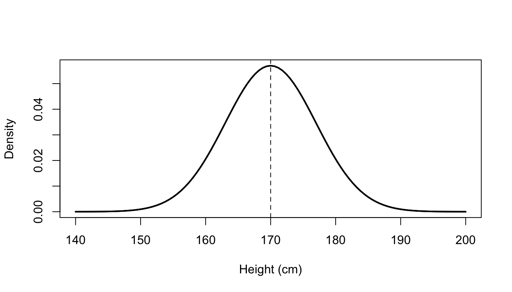
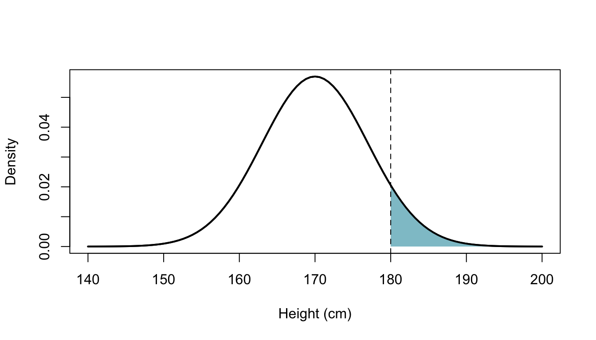
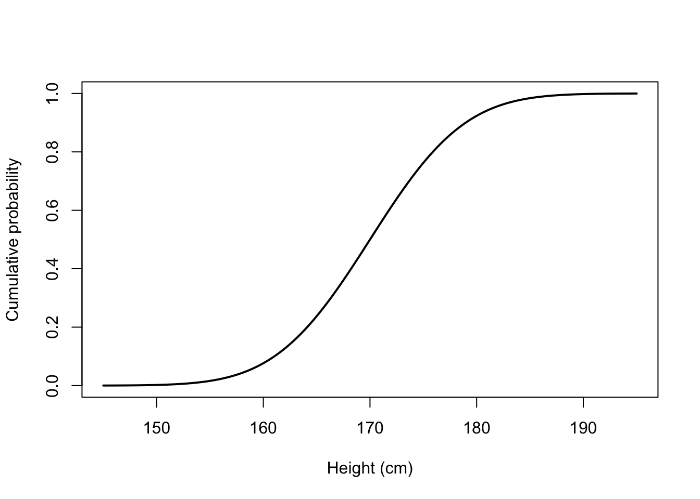
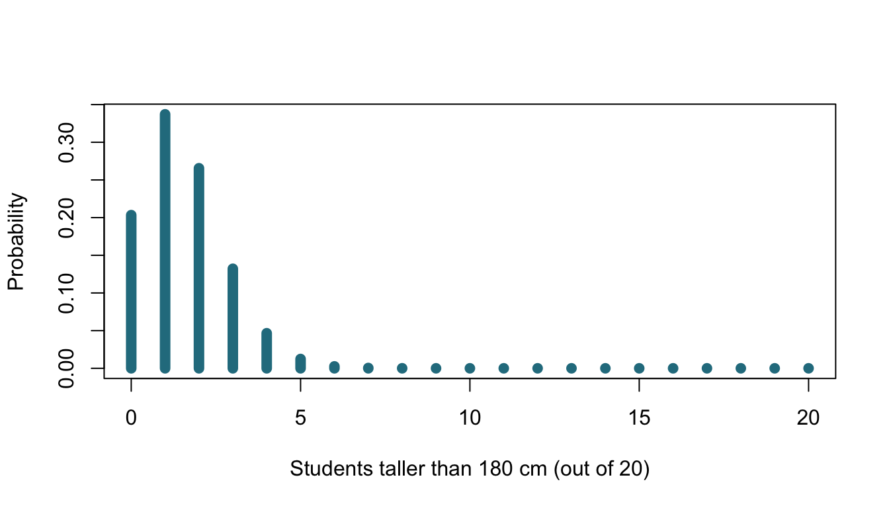
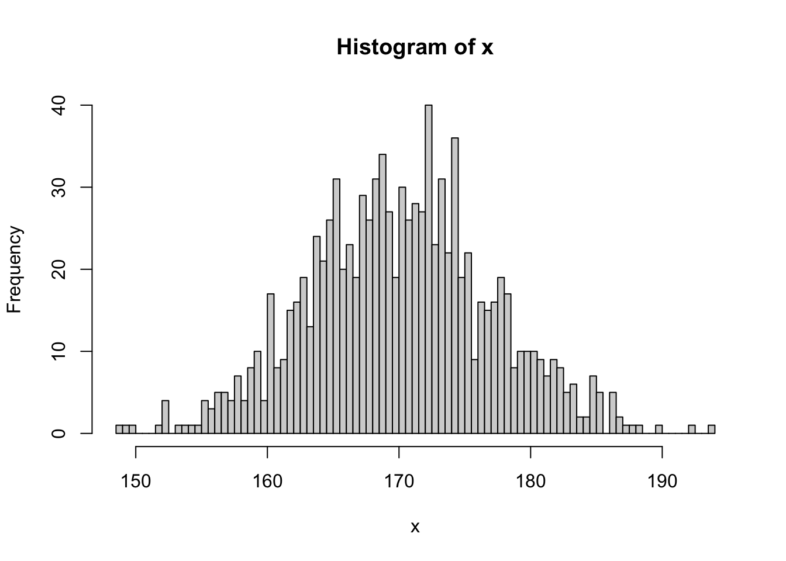

3 Describing outcomes with probability models
Statistical Methods for Life Sciences
In the previous section’s BMI exercise, knowing that 50% of adults have a BMI above 25 was not enough to calculate the probability that a randomly selected adult has a BMI above 30.
To calculate this probability, we need more information about how BMI values are distributed above 25. A probability model is one way to describe this distribution.
3.1 Probability models and probability distributions
A probability model is a mathematical description of a random process. It specifies possible outcomes, their probabilities and the assumptions about how observations arise.
A random variable \(X\) assigns a numerical value to each outcome. Its probability distribution describes how probability is distributed across those values.
A continuous distribution is described by a probability density function, \(f(x)\).
While discrete distribution is described by a probability mass function, p(x).
3.2 A normal model for individual heights
For instance, our model might assume that we independently select students from a population where heights are normally distributed with mean 170 cm and SD 7 cm. Let’s see how to calculate the probability that a student is taller than 180cm.
Given our model, the probability distribution of the height (X) of one randomly selected student is:
\[ X \sim N(\mu,\sigma^2), \qquad \mu=170,\quad \sigma=7. \] where mean \(\mu\) and variance \(\sigma^2\) are distribution parameters.
- Expected value: \(E[X]=\mu\), the long-run average.
- Variance: \(\operatorname{Var}(X)=E[(X-\mu)^2]\), the expected squared distance from the mean.
- Standard deviation (SD): \(\sigma=\sqrt{\operatorname{Var}(X)}\) the square root of variance, expressed in the original units
So here:
\[ E[X]=170\text{ cm}, \]
\[ \operatorname{Var}(X) =E[(X-\mu)^2] =\sigma^2 =7^2 =49\text{ cm}^2, \]
\[ \operatorname{SD}(X) =\sqrt{\operatorname{Var}(X)} =7\text{ cm}. \]
And the probability density function, \(f(x)\) describing distribution has a form:
\[ f(x)= \frac{1}{\sigma\sqrt{2\pi}} \exp\left[-\frac{(x-\mu)^2}{2\sigma^2}\right]. \]
For a continuous distribution, the density function \(f(x)\) gives the height of the density curve at a particular value \(x\). A higher density means that values around \(x\) are relatively more common than values around points with lower density.
Note that normality is a modelling assumption, not a universal property of biological measurements.
3.3 Continuous outcomes: probability is area
The density itself is not a probability. For continuous variables, probabilities are represented by areas under the density curve.
The probability that \(X\) falls between \(a\) and \(b\) is the area under the density curve between these values:
\[ P(a < X \leq b)=\int_a^b f(x)\,dx. \]
The integral adds up the density across the interval.
The total area under the density curve is 1:
\[ \int_{-\infty}^{\infty} f(x)\,dx = 1. \]
For example, for our height model, the probability density function (PDF) is:
\[ f(x)= \frac{1}{7\sqrt{2\pi}} \exp\left[-\frac{(x-170)^2}{98}\right]. \]
The probability \(P(X>180)\) is the area under the normal density curve to the right of 180, shown below:

In theory, we calculate this area by integration:
\[ P(X>180)=\int_{180}^{\infty}f(x)\,dx. \]
The cumulative distribution function (CDF), \(F(x)\), gives the accumulated area to the left of a cutoff:
\[ F(x)=P(X\leq x)=\int_{-\infty}^{x}f(t)\,dt. \]
Code
x <- seq(145, 195, length.out = 500)
plot(
x,
pnorm(x, mean = 170, sd = 7),
type = "l",
lwd = 2,
xlab = "Height (cm)",
ylab = "Cumulative probability",
main = ""
)
Since total area under the density curve is 1, the probability a student being above 180 cm tall is the complement of the probability at or below 180 cm:
\[ P(X>180)=1-F(180). \]
The normal CDF cannot be calculated using a simple closed-form expression. Historically, probabilities were obtained from tabulated values of the standard normal distribution - a normal distribution with mean 0 and SD 1. Today, we can calculate them numerically.
E.g., in R pnorm() evaluates the normal CDF directly, and for our model with mean 170 cm and SD 7 cm:
Code
pnorm(180, mean = 170, sd = 7)[1] 0.9234363This gives \(F(180)\approx0.9234\). Therefore:
\[ P(X>180)=1-F(180)\approx1-0.9234=0.0766. \] So, under this model, about 7.7% of students are taller than 180 cm.
In R, we can also obtain the upper-tail probability directly by setting lower.tail = FALSE and arrive at the same results:
Code
pnorm(180, mean = 170, sd = 7, lower.tail = FALSE)[1] 0.076563733.4 Standardisation: how far from the mean?
A z-score expresses distance from the mean in SD units:
\[ Z=\frac{X-\mu}{\sigma}. \]
- Subtracting the mean centres the distribution at zero.
- Dividing by the SD rescales it to have a standard deviation of one.
For a normally distributed variable, standardisation gives a a new variable \(Z\):
\[ Z \sim N(0,1), \]
that follows the standard normal distribution.
Given our height example, we can locate where a measurement e.g. 180 cm lies relative to the mean:
\[ z=\frac{180-170}{7}\approx1.43. \]
This height is about 1.43 SD above the mean.
Standardisation changes the scale, but not the corresponding probability. Being above 180 cm is equivalent to having a z-score above \(10/7 \approx 1.43\).
Writing \(\Phi\) for the standard normal cumulative distribution function:
\[ \begin{aligned} P(X>180) &=P\left(Z>\frac{180-170}{7}\right)\\ &=1-\Phi\left(\frac{10}{7}\right)\\ &\approx0.0766. \end{aligned} \]
We get the same probability in R using the standard normal distribution, which is the default for pnorm():
Code
z <- (180 - 170) / 7
pnorm(z, lower.tail = FALSE)[1] 0.076563733.5 Percentiles: finding a cutoff
So far, we have started with a height and calculated a probability. Now we reverse the question:
Below which height do 95% of students fall?
The 95th percentile, \(x_{0.95}\), satisfies:
\[ P(X\leq x_{0.95})=0.95. \]
We first find this cutoff on the standard normal scale.
The symbol \(\Phi\) denotes the standard normal cumulative distribution function:
\[ \Phi(z)=P(Z\leq z). \]
It gives the probability below a specified z-score. Its inverse, \(\Phi^{-1}\), goes in the opposite direction: it gives the z-score for a specified cumulative probability.
For a probability of 0.95:
\[ z_{0.95}=\Phi^{-1}(0.95)\approx1.645. \]
This value comes from the standard normal distribution: approximately 95% of its area lies below 1.645. We obtain it using software or a standard normal table.
In R:
Code
#|code-fold: show
qnorm(0.95)[1] 1.644854To convert this z-score back to centimeters, we multiply by the SD and add the mean:
\[ \begin{aligned} x_{0.95} &=\mu+\sigma z_{0.95}\\ &\approx170+7\times1.645\\ &\approx181.5\text{ cm}. \end{aligned} \]
We can also obtain the height cutoff directly in R:
Code
qnorm(0.95, mean = 170, sd = 7)[1] 181.514Under our model, 95% of students are at or below approximately 181.5 cm, and 5% are above it.
A percentile converts a probability into a cutoff. In R:
pnorm()goes from a value to a cumulative probability;qnorm()goes from a cumulative probability to a value.
3.6 Discrete outcomes: counting students
Not all outcomes are continuous. In life sciences, we may instead be interested in counts, such as the number of bacterial colonies on a plate or the number of sequencing reads assigned to a gene. The same probability concepts apply, but discrete outcomes are described using probabilities at specific values rather than areas under a continuous curve.
Let’s imagine we are interested in how many students in a sample are taller than 180 cm. We sample 20 PhD students from a course at UU and record how many of them are taller than 180 cm.
Let \(K\) denote this count. Its possible values are:
\[ K\in\{0,1,2,\ldots,20\}. \]
Unlike height, this is a discrete random variable: it can take only specific, whole-number values, from 0 to 20.
3.7 From one student to a count
For one student, the outcome “taller than 180 cm or not” can be coded as 1 or 0, respectively.
This follows a Bernoulli distribution, which describes a single random outcome with two possible values:
- \(1\): success
- \(0\): failure
If the probability of success is \(p\), then the probability of failure is \(1-p\):
\[ P(Y=y)= \begin{cases} p, & y=1,\\ 1-p, & y=0. \end{cases} \]
The expected value and variance are:
\[ E[Y]=p, \qquad \operatorname{Var}(Y)=p(1-p). \]
In our example, for one randomly selected student:
- \(Y=1\) if the student is taller than 180 cm,
- \(Y=0\) otherwise.
Since \(X\) denotes the student’s height, under our height model:
\[ p=P(X>180)\approx0.0766. \]
Thus:
\[ Y \sim \operatorname{Bernoulli}(0.0766). \]
So the Bernoulli distribution describes whether one student is taller than 180 cm or not.
A binomial distribution describes the number of successes in \(n\) independent Bernoulli trials, where each trial has the same probability of success, \(p\).
If \(Y_i\) denotes the Bernoulli outcome for student \(i\), then the total number of successes is:
\[ K=\sum_{i=1}^{n}Y_i. \]
The binomial distribution is written as:
\[ K\sim\operatorname{Bin}(n,p). \]
The expected value and variance are:
\[ E[K]=np, \]
\[ \operatorname{Var}(K)=np(1-p). \]
In our example, we sample 20 students and define a success as being taller than 180 cm. Since
\[ p=P(X>180)\approx0.0766, \]
the number of students taller than 180 cm follows:
\[ K\sim\operatorname{Bin}(20,0.0766). \]
The expected count is therefore:
\[ E[K]=20\times0.0766\approx1.53. \]
This means that across many repeated samples of 20 students, the average number taller than 180 cm would be about 1.5 students. Each individual observed count, however, must be a whole number.
3.8 Probability mass function: the probability of each count
For a discrete random variable, the probability mass function (PMF) gives the probability of each possible value:
\[ p_K(k)=P(K=k). \]
Unlike a continuous density, where probability is represented by an area, the value of a PMF is itself a probability.
For a binomial random variable,
\[ K\sim\operatorname{Bin}(n,p), \]
the probability mass function is:
\[ P(K=k)= \binom{n}{k} p^k(1-p)^{n-k}, \qquad k=0,1,\ldots,n. \]
Here, \(\binom{n}{k}\) counts the number of ways in which exactly \(k\) successes can occur among \(n\) trials.
In our example,
\[ K\sim\operatorname{Bin}(20,0.0766), \]
where \(K\) is the number of students taller than 180 cm among 20 independently selected students.
The PMF therefore gives the probability of observing each possible count, from 0 to 20 students.
We can calculate and plot these probabilities in R using dbinom():

The height of each bar is the probability of observing that particular count. For example, the bar at \(k=2\) represents:
\[ P(K=2). \]
The probabilities across all possible counts sum to 1:
\[ \sum_{k=0}^{20} P(K=k)=1. \] As an example, let’s calculate the probability that exactly five students out of 20 are taller than 180cm. To do that, we evaluate the PMF at \(k=5\):
\[ P(K=5)=\binom{20}{5}p^5(1-p)^{15}. \]
Or in R:
Code
dbinom(5, size = 20, prob = p_tall)[1] 0.01234989Note that for a continuous variable, a PDF gives a density and probabilities are obtained from areas. For a discrete variable, a PMF gives probabilities directly at individual values.
3.8.1 Cumulative distribution function: adding probabilities
The cumulative distribution function (CDF) gives the probability of a value at or below a cutoff (same meaning as for continuous distribution).
For our count variable (K):
\[ F_K(k)=P(K\leq k)=\sum_{j=0}^{k}P(K=j). \]
For example, the probability of four or fewer students being taller than 180 cm is:
\[ F_K(4)=P(K=0)+P(K=1)+\cdots+P(K=4). \]
For continuous variables, we integrate the density. For discrete variables, we add the probability masses.
In R, pbinom() evaluates the binomial CDF:
Code
pbinom(4, size = 20, prob = p_tall)[1] 0.9846016What is the probability that five or more students are of 20 will be taller than 180cm?
As before, we can use the complement rule and this time write:
\[ P(K\geq5)=1-P(K\leq4)=1-F_K(4). \]
In R:
Code
1 - pbinom(
4, size = 20, prob = p_tall,
lower.tail = TRUE
)[1] 0.01539839Code
#or
pbinom(
4, size = 20, prob = p_tall,
lower.tail = FALSE
)[1] 0.015398393.9 Continuous vs. discrete
| Concept | Continuous example: height | Discrete example: count |
|---|---|---|
| Random variable | \(X\): one student’s height | \(K\): number taller than 180 cm among 20 students |
| Model | Normal | Binomial |
| Distribution function | PDF: \(f(x)\) gives density | PMF: \(p_K(k)=P(K=k)\) gives probability |
| Probability calculation | Integrate density over an interval | Sum probabilities of individual values |
| CDF | \(F_X(x)=P(X\leq x)\) | \(F_K(k)=P(K\leq k)\) |
| R: density or mass | dnorm() gives density |
dbinom() gives probability |
| R: cumulative probability | pnorm() |
pbinom() |
| Upper tail | \(P(X>180)=1-F_X(180)\) | \(P(K\geq5)=1-F_K(4)\) |
The CDF has the same meaning in both cases: probability at or below a cutoff. The difference is how we accumulate probability: integration for a continuous density, summation for discrete masses.
3.10 Other common distributions in life sciences
Beyond normal and binomial distributions, several other models are useful:
Poisson: counts within a fixed time, area or volume, such as colony counts under suitable conditions. The mean and variance are equal.
Negative binomial: counts with more variability than Poisson allows. Commonly used for RNA-seq counts across biological replicates.
Log-normal: positive measurements whose logarithms are normally distributed, such as some biological concentrations.
Exponential: waiting times between events occurring independently at a constant rate.
Hypergeometric: counts when sampling without replacement from a finite set, such as overlap between a selected gene list and a pathway.
The t, chi-squared and F distributions also appear in statistical inference, often as distributions of test statistics.
3.11 Simulation: generating outcomes from a probability model
Once we have specified a probability model, we can use it to simulate possible outcomes.
For example, under our height model:
\[ X \sim N(170, 7^2), \]
we can simulate the height of one randomly selected student:
rnorm(1, mean = 170, sd = 7)[1] 173.6441Each simulation gives one possible outcome under the model.
We can also simulate many students:
x <- rnorm(1000, mean = 170, sd = 7)
head(x)[1] 162.4422 170.9747 169.4068 165.3335 152.3874 164.8540The individual simulated values vary, but with many simulations their distribution resembles the probability distribution specified by the model.
hist(x, n = 100)
3.12 Approximating probabilities by simulation
Simulation can also be used to approximate probabilities.
For example, we previously calculated:
\[ P(X>180) \approx 0.077. \]
Using simulated heights, we can estimate the same probability by calculating the proportion that exceed 180 cm:
mean(x > 180)[1] 0.083With a large number of simulations, this value should be close to the probability calculated from the normal distribution.
The law of large numbers states that if the same experiment is performed many times the average of the result will be close to the expected value.
3.13 Key message
ImportantKey message
A probability model lets us move from describing possible outcomes to calculating how likely they are, under stated assumptions.
For continuous measurements, probabilities are areas under a density curve; for discrete counts, they are sums of probability masses.
In both cases, the CDF gives the probability at or below a cutoff, while a percentile answers the reverse question: which cutoff corresponds to a given probability?
Simulation generates possible outcomes under an assumed probability model.
By repeating the simulation many times, we can explore the variation and probabilities implied by that model.